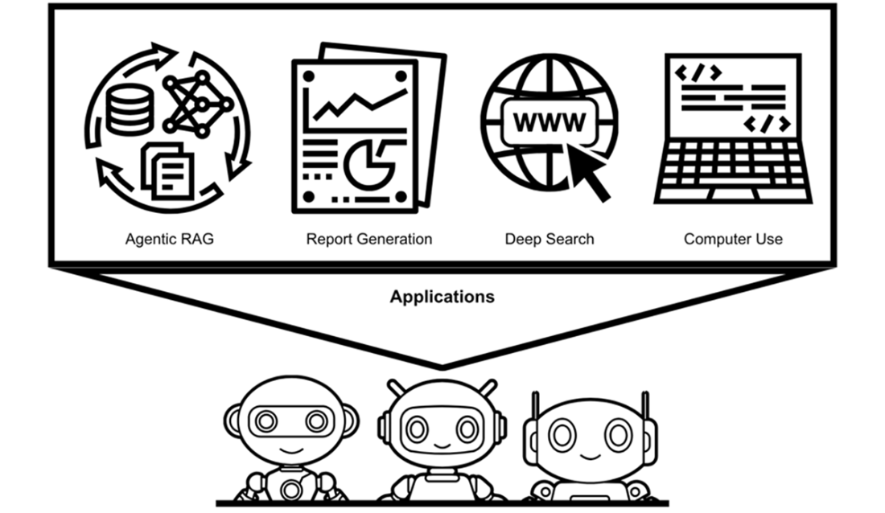
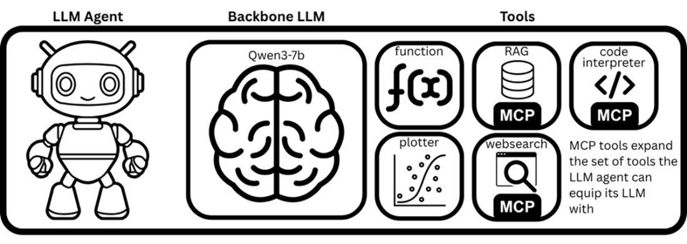
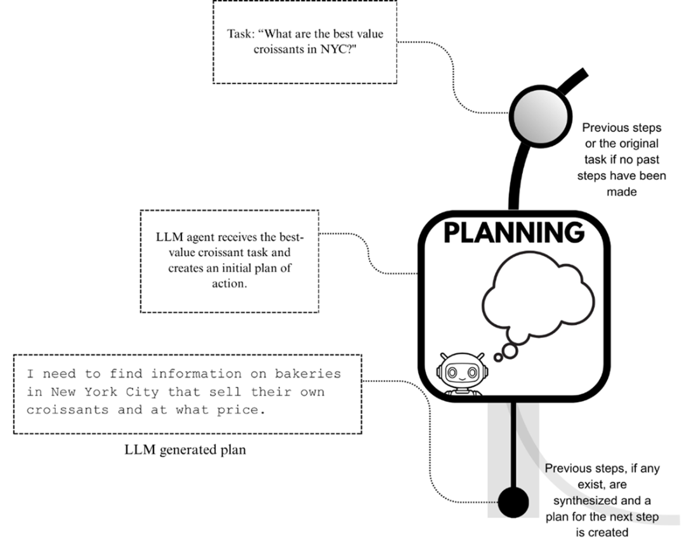
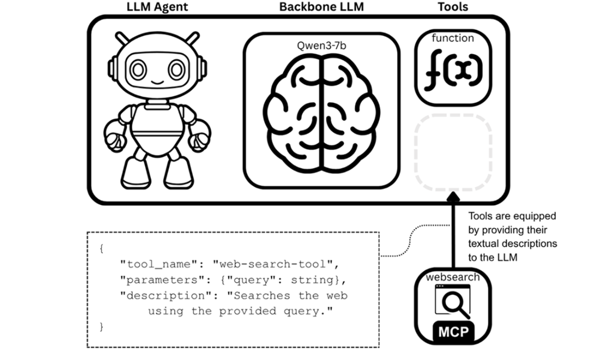
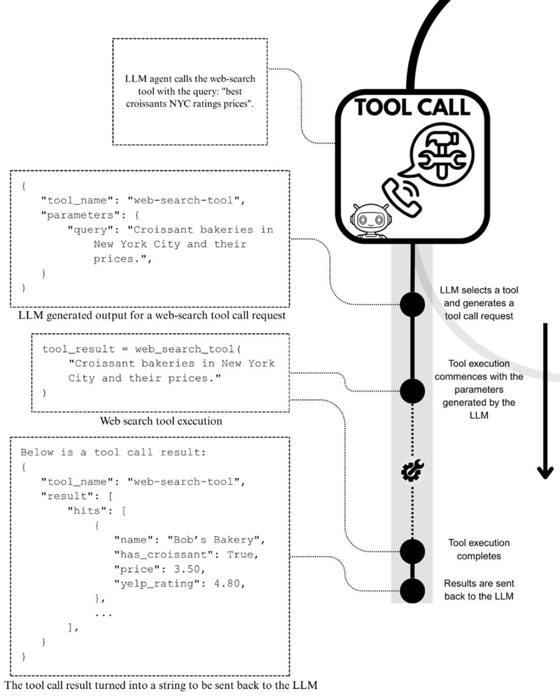
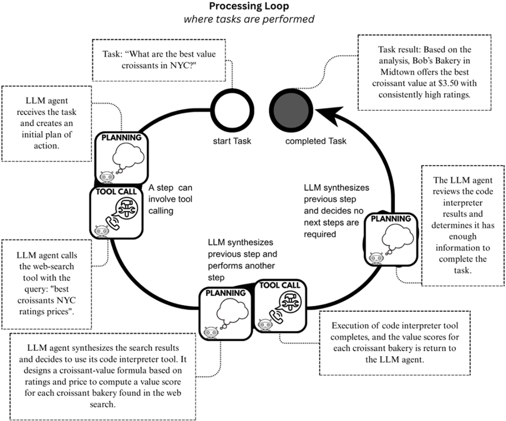

Chapter Export
1 什么是LLM智能体与多智能体系统？
1_What_are_LLM_Agents_and_Multi-Agent_Systems?
1 什么是LLM智能体与多智能体系统？
Source
1 What are LLM Agents and Multi-Agent Systems?
本章涵盖
Source
This chapter covers
LLM智能体与多智能体系统的当前实际应用
Source
Current real-world applications of LLM agents and multi-agent systems
什么是LLM智能体，以及为何仅凭LLM本身是不够的
Source
What LLM agents are and why LLMs alone are insufficient
LLM智能体的重要设计模式、增强方法与协议
Source
Important design patterns, enhancements, and protocols for LLM agents
当应用可能受益于多智能体系统时
Source
When applications may benefit from multi-agent systems
开发LLM智能体和多智能体系统的路线图
Source
A roadmap for developing LLM agents and multi-agent systems
如果用户询问大语言模型（LLM）在纽约哪里能找到性价比最高的牛角面包，LLM可能会回答：“我将搜索网络，查找评价高且价格合理的牛角面包。”LLM非常擅长表达为达成特定目标而采取行动的意图——即生成文本，告诉我们它们将如何解决查询。
然而，此时我们遇到了一个关键限制：由于大语言模型（LLM）仅仅是文本生成器，它们无法根据其意图采取行动。
它们能够阐述处理任务的计划，但无法执行该计划——除非它们被置于一个能够协调计划并执行行动的系统之中。
然而，此时我们遇到了一个关键限制：由于大语言模型（LLM）仅仅是文本生成器，它们无法根据其意图采取行动。
它们能够阐述处理任务的计划，但无法执行该计划——除非它们被置于一个能够协调计划并执行行动的系统之中。
Source
If a user asks a Large Language Model (LLM) where to find the best value in croissants in New York City, the LLM might respond, “I will search the web for highly-rated croissants and their prices.” LLMs are very good at expressing intent to act toward a specific goal—to generate text that tells us what they are going to do to resolve a query. At this point, however, we run into a critical limitation: since LLMs are only text-generators, they cannot act on their intentions. They can articulate a plan for processing a task, but cannot carry it out—unless they are surrounded by a system to orchestrate the plan and execute the actions.
这些编排系统被称为LLM智能体。
我们很快会对这个定义进行一些细微的补充，但就我们的目的而言，LLM智能体是能够自动将LLM的意图转化为行动的系统。
我们很快会对这个定义进行一些细微的补充，但就我们的目的而言，LLM智能体是能够自动将LLM的意图转化为行动的系统。
Source
These orchestration systems are called LLM agents. We’ll add some nuance to this definition soon, but for our purposes, LLM agents are systems that automatically turn the LLM’s intentions into actions.
LLM智能体通过利用现代大型语言模型的一项关键能力——工具调用——来工作。
所谓工具调用，是指我们可以（以文本形式）向LLM提供一个工具列表及其功能描述，当被查询时，LLM能够（以文本形式）生成一个工具调用请求，以调用适当的工具来执行其意图。
该请求的实际处理发生在应用程序的其他部分，处理结果会返回给LLM进行综合并生成响应。
所谓工具调用，是指我们可以（以文本形式）向LLM提供一个工具列表及其功能描述，当被查询时，LLM能够（以文本形式）生成一个工具调用请求，以调用适当的工具来执行其意图。
该请求的实际处理发生在应用程序的其他部分，处理结果会返回给LLM进行综合并生成响应。
Source
LLM agents work by interfacing with a key capability of modern LLMs: tool-calling. By tool-calling, we mean we can give the LLM (in text) a list of tools and a description of what those tools do, and the LLM can generate (in text) a tool-call request to call on the appropriate tool to carry out its intent when queried. The actual processing of this request occurs elsewhere in the application, and its results are sent back to the LLM for synthesis and response.
LLM代理在执行用户任务时会广泛使用工具调用功能。
它们确保LLM发出的工具调用请求得到处理，并将结果返回给LLM。
如果没有LLM代理，用户就需要自己处理工具处理与查询LLM之间的来回交互。
它们确保LLM发出的工具调用请求得到处理，并将结果返回给LLM。
如果没有LLM代理，用户就需要自己处理工具处理与查询LLM之间的来回交互。
Source
LLM agents utilize tool-calling extensively when performing tasks for users. They ensure that the tool-call requests made by the LLMs are processed, and results are sent back to the LLM. Without an LLM agent, users would have to manage this back-and-forth between tool processing and querying the LLM themselves.
正如现实生活一样，工具箱中的工具越多，能做的事情就越多；例如，为LLM配备网络搜索、数学计算和代码解释器等工具，使其能够处理各种任务。
我们可以为LLM构建自己的工具，也可以利用他人创建的工具。
Anthropic的模型上下文协议（MCP）是一个流行标准，用于规范LLM智能体如何访问第三方工具，从而为其底层LLM配备能力。
许多工具及其他资源通过MCP提供，利用这些资源能极大提升LLM智能体的潜力。
我们可以为LLM构建自己的工具，也可以利用他人创建的工具。
Anthropic的模型上下文协议（MCP）是一个流行标准，用于规范LLM智能体如何访问第三方工具，从而为其底层LLM配备能力。
许多工具及其他资源通过MCP提供，利用这些资源能极大提升LLM智能体的潜力。
Source
As in real life, the more tools in your toolbox, the more you can do; equipping an LLM with tools for web search, math calculations, and code interpreters, for instance, makes it capable of handling a variety of tasks. We can build our own tools for LLMs to use, but we can also rely on the tools that others have created. Anthropic’s Model Context Protocol (MCP) is a popular standard for how LLM agents access third-party tools with which they can equip their underlying LLM. Many tools, as well as other resources, are made available through MCP, and tapping into them dramatically increases an LLM agent’s potential.
还可以将多个LLM智能体组合成一个单一系统，以提高任务性能。
我们将此类系统称为多智能体系统（MAS）。
在多智能体系统（MAS）中，单个LLM智能体相互协作，代表用户执行任务。
谷歌的Agent2Agent（A2A）协议通过定义智能体间交互的标准，有助于促进这些协作。
借助A2A，即使使用不同框架构建的LLM智能体也能相互协作以完成任务。
我们将此类系统称为多智能体系统（MAS）。
在多智能体系统（MAS）中，单个LLM智能体相互协作，代表用户执行任务。
谷歌的Agent2Agent（A2A）协议通过定义智能体间交互的标准，有助于促进这些协作。
借助A2A，即使使用不同框架构建的LLM智能体也能相互协作以完成任务。
Source
It is also possible to combine multiple LLM agents into a single system in order to improve task performance. We refer to such systems as multi-agent systems (MAS). In MAS, individual LLM agents collaborate with each other to perform tasks on behalf of a user. Google’s Agent2Agent (A2A) protocol helps facilitate these collaborations by defining a standard for agent-to-agent interactions. With A2A, even LLM agents built using different frameworks can collaborate with each other to accomplish a task.
要有效运用LLM智能体和多智能体系统，并充分发挥其潜力，关键在于深入理解它们的工作原理。
为了获得这种理解，我们将
为了获得这种理解，我们将
Source
To work with LLM agents and multi-agent systems, and make the most of them, it’s important to have a deep understanding of how they work. To gain that understanding, we will
从零开始构建我们自己的LLM智能体和多智能体系统。
我们将从零开始构建LLM智能体和多智能体系统的完整基础设施，包括LLM接口、工具、MCP资源以及A2A连接。
我们将把这些全部打包进我们自己的LLM智能体框架中。
我们将从零开始构建LLM智能体和多智能体系统的完整基础设施，包括LLM接口、工具、MCP资源以及A2A连接。
我们将把这些全部打包进我们自己的LLM智能体框架中。
Source
build our very own LLM agents and multi-agent systems from scratch. We will build the complete infrastructure for LLM agents and MAS from the ground up, including interfaces for LLMs, tools, MCP resources, and A2A connectivity. And we’ll package all of these into our very own LLM agent framework.
目前已经存在多个LLM智能体框架，大多数AI工程师和实践者都在使用其中之一。
但本书的目标是让您更深入地理解这些LLM智能体的工作原理，以便您能自信高效地使用现有框架，或根据特定需求构建专门的解决方案。
这就是为什么我们要从头开始构建自己的框架。
但本书的目标是让您更深入地理解这些LLM智能体的工作原理，以便您能自信高效地使用现有框架，或根据特定需求构建专门的解决方案。
这就是为什么我们要从头开始构建自己的框架。
Source
Several LLM agent frameworks already exist, and most AI engineers and practitioners use one of them. But the goal of this book is to give you a deeper understanding of how these LLM agents function, so you can work confidently and efficiently with these existing frameworks or build specialized solutions specific to your needs. That’s why we are building ours from scratch.
1.1 LLM智能体与多智能体系统的应用场景
Source
1.1 Where LLM Agents and Multi-Agent Systems are useful
为了了解LLM智能体和多智能体系统（MAS）的广泛实用性，我们来讨论几个现实世界的应用案例，其中一些如图1.1所示。
Source
To get an idea of the broad usefulness of LLM agents and MAS, let’s discuss a few real-world use cases, some of which are depicted in figure 1.1.
图1.1 LLM智能体的应用场景众多，包括智能检索增强生成（RAG）、报告生成、深度搜索和计算机使用等，所有这些都可以从多智能体系统（MAS）中受益。
图片锚点保留

1.1.1 报告生成
Source
1.1.1 Report generation
生成报告的典型流程包括收集大量信息，将其综合为关键见解，并将这些见解总结为结构化的输出格式。
由于LLM能够综合大量文本信息，报告生成任务已成为LLM代理的热门应用场景。
例如，我们可以指派一个LLM代理收集各类投资机会的统计数据，然后为每个机会提供风险与机遇评估报告。
注意：此类报告可能因LLM幻觉而受到影响，因此监控至关重要。
由于LLM能够综合大量文本信息，报告生成任务已成为LLM代理的热门应用场景。
例如，我们可以指派一个LLM代理收集各类投资机会的统计数据，然后为每个机会提供风险与机遇评估报告。
注意：此类报告可能因LLM幻觉而受到影响，因此监控至关重要。
Source
The typical process for producing a report involves the collection of a large body of information, synthesizing it into key insights, and summarizing these insights into a structured output format. Since LLMs can synthesize large bodies of text information, the report generation task has become a popular task for LLM agents. For instance, we might task an LLM agent to collect statistics on a variety of investment opportunities, and then provide a risk-and-opportunity assessment report for each of them. Note: reports like these can be marred by LLM hallucinations, so monitoring is crucial.
1.1.2 网络搜索与深度搜索
Source
1.1.2 Web search and deep search
针对一般用户查询进行搜索是LLM代理的常见用途。
在这些应用中，LLM代理通常包含一个经过微调以增强推理能力和网络搜索工具的LLM。
Perplexity.ai是使用LLM代理的新型网络搜索引擎公司之一，但OpenAI的ChatGPT和Anthropic的Claude网络应用最近也添加了网络搜索功能。
在这些应用中，LLM代理通常包含一个经过微调以增强推理能力和网络搜索工具的LLM。
Perplexity.ai是使用LLM代理的新型网络搜索引擎公司之一，但OpenAI的ChatGPT和Anthropic的Claude网络应用最近也添加了网络搜索功能。
Source
Performing searches against general user queries is a common use for LLM agents. Here, the LLM agents feature an LLM that has likely been fine-tuned for enhanced reasoning capabilities and web search tools. Perplexity.ai is one of the new web search engine companies that use LLM agents, but OpenAI’s ChatGPT and Anthropic’s Claude web applications have also recently added web search.
深度研究是网络搜索的延伸，它采用多步骤编排逻辑，包括对网页进行深度浏览，随后进行信息综合和报告生成。
谷歌的Gemini深度研究产品采用了一种包含规划、搜索、推理和报告生成的编排逻辑。
其他大型LLM提供商也推出了各自版本的深度研究功能。
本书后续章节中，我们将使用我们的LLM智能体构建工具，实现我们自己的深度研究智能体。
谷歌的Gemini深度研究产品采用了一种包含规划、搜索、推理和报告生成的编排逻辑。
其他大型LLM提供商也推出了各自版本的深度研究功能。
本书后续章节中，我们将使用我们的LLM智能体构建工具，实现我们自己的深度研究智能体。
Source
An extension of web search is deep research, which involves a multi-step orchestration logic that executes steps of deep browsing of webpages, followed by synthesis and report generation steps. Google’s Gemini Deep Research product employs an orchestration logic that involves planning, searching, reasoning, and reporting. The other large LLM providers offer their own versions of deep research. Later in this book, we’ll implement our very own deep research agent using our LLM agent build.
1.1.3 智能体化检索增强生成
Source
1.1.3 Agentic RAG
LLM智能体也可作为检索增强生成（RAG）系统的一部分，即所谓的智能体化RAG系统。
在此类应用中，LLM智能体配备了查询工具，可访问预先构建的知识库，这些知识库包含有助于回答用户查询的文档。
设想一家公司将其所有会议记录和内部文档索引至一系列知识库中。
智能体化RAG系统随后可从这些文档中检索上下文，以回答公司员工提出的查询。
在此类应用中，LLM智能体配备了查询工具，可访问预先构建的知识库，这些知识库包含有助于回答用户查询的文档。
设想一家公司将其所有会议记录和内部文档索引至一系列知识库中。
智能体化RAG系统随后可从这些文档中检索上下文，以回答公司员工提出的查询。
Source
LLM agents can also be used as part of a retrieval-augmented generation (RAG) system, otherwise known as Agentic RAG systems. In these applications, LLM agents are equipped with tools for querying previously built knowledge stores that contain artifacts to help answer user queries. Imagine a company with all its meeting notes and internal documentation indexed into a set of knowledge stores. An agentic RAG system can then retrieve context from these documents to answer queries supplied by the company’s employees.
1.1.4 编码LLM智能体
Source
1.1.4 Coding LLM agents
LLM和LLM智能体最受欢迎的用途之一便是编码和软件开发。
甚至出现了一个新术语“氛围编码”，指的是将整个项目或应用程序的编码工作完全交由LLM或LLM智能体处理，人类仅提供自然语言指令。
编码LLM智能体也能协同工作，为应用程序的代码库做出贡献，这与人类软件开发团队参与项目的方式非常相似。
在这些应用中，LLM智能体可以配备沙盒化的代码解释器，以便在安全环境中执行任意代码。
甚至出现了一个新术语“氛围编码”，指的是将整个项目或应用程序的编码工作完全交由LLM或LLM智能体处理，人类仅提供自然语言指令。
编码LLM智能体也能协同工作，为应用程序的代码库做出贡献，这与人类软件开发团队参与项目的方式非常相似。
在这些应用中，LLM智能体可以配备沙盒化的代码解释器，以便在安全环境中执行任意代码。
Source
One of the more popular uses for LLMs and LLM agents has been for coding and software development. There’s even a new term, “vibe coding,” for giving the reins over to an LLM or LLM agent to code entire projects or applications, with the human only providing natural language instructions. Coding LLM agents can also work together to contribute to an application’s code base, very much like how human software developer teams contribute to a project. In these applications, LLM agents can be equipped with sandboxed code interpreters for executing arbitrary code in secure environments.
1.1.5 计算机使用
Source
1.1.5 Computer use
最近，LLM智能体还被配备了各种工具，以扩大其应用范围和权限，包括那些能够控制整个应用程序（如网页浏览器）的工具。
在计算机应用场景中，LLM智能体甚至可以被授予对整个操作系统软件的控制权。
凭借这类权限，LLM智能体能够执行诸如订餐、购买音乐会门票等任务，这一切都通过计算机完成，方式与人类操作类似。
从这个角度看，LLM智能体可被视为新一代的机器人流程自动化（RPA）系统。传统的RPA系统基于规则，无法像LLM智能体那样灵活适应或运用推理进行决策。
在计算机应用场景中，LLM智能体甚至可以被授予对整个操作系统软件的控制权。
凭借这类权限，LLM智能体能够执行诸如订餐、购买音乐会门票等任务，这一切都通过计算机完成，方式与人类操作类似。
从这个角度看，LLM智能体可被视为新一代的机器人流程自动化（RPA）系统。传统的RPA系统基于规则，无法像LLM智能体那样灵活适应或运用推理进行决策。
Source
LLM agents have also recently been equipped with tools that increase their scope and permissions, including those providing controls to entire applications, such as web browsers. With computer-use applications, the LLM agents can even be given control of the entirety of the operating software. With these kinds of permissions, LLM agents can perform tasks such as ordering food, buying concert tickets, and more, all through using a computer, much like how humans would. In this way, LLM agents can be viewed as next-generation Robot Process Automation (RPA) systems, which traditionally are rules-based and cannot flexibly adapt or apply reasoning to make decisions like LLM agents can.
1.1.6 利用多智能体系统增强应用
Source
1.1.6 Enhancing applications with MAS
所有这些LLM智能体的应用，都可以通过多智能体系统得到增强，即在整体任务的不同组件中使用专门的智能体。
在报告生成应用中，可以有一个专门的LLM智能体，能够更有效地从领域特定数据集（如财务文档）中总结或提取信息。
这个智能体可能会与另一个负责生成结构良好报告的LLM智能体协作。
或者，我们可能采用一个编码LLM智能体团队来构建全栈应用：一个负责构建前端代码，另一个负责创建后端。
原则上，当复杂任务能够分解为更小的子任务时，多智能体系统表现卓越，此时专注于特定领域的LLM智能体优于通用型智能体。
在报告生成应用中，可以有一个专门的LLM智能体，能够更有效地从领域特定数据集（如财务文档）中总结或提取信息。
这个智能体可能会与另一个负责生成结构良好报告的LLM智能体协作。
或者，我们可能采用一个编码LLM智能体团队来构建全栈应用：一个负责构建前端代码，另一个负责创建后端。
原则上，当复杂任务能够分解为更小的子任务时，多智能体系统表现卓越，此时专注于特定领域的LLM智能体优于通用型智能体。
Source
All of these uses for LLM agents may be enhanced through MAS by using specialized agents across different components of an overall task. In the report generation application, you might have a specialized LLM agent that can more effectively summarize or extract information from domain-specific datasets, like financial documents. This agent might collaborate with another LLM agent that is responsible for producing well-structured reports. Or we might employ a team of coding LLM agents for building a full-stack application: you might have one that builds front-end code and another that creates the backend. In principle, MAS excel when complex tasks can be decomposed into smaller sub-tasks, where focused LLM agents outperform general-purpose ones.
1.2 什么是LLM智能体？
Source
1.2 What is an LLM agent?
智能体的一个简单定义是：能够自主行动以执行任务的实体。
由于大语言模型只能生成文本而无法执行行动，因此不能被视为智能体。
由于大语言模型只能生成文本而无法执行行动，因此不能被视为智能体。
Source
A simple definition of an agent is some entity that acts autonomously to perform a task. Since LLMs can only generate text and cannot act, they cannot be viewed as agents.
如前所述，LLM能够通过文本来表达行动意图。
它们能够生成工具调用请求，并能够制定执行任务的计划。
因此，如果我们围绕一个能够编排这些生成的工具调用请求和计划执行的LLM构建一个系统，那么该系统可被视为一个智能体。
它们能够生成工具调用请求，并能够制定执行任务的计划。
因此，如果我们围绕一个能够编排这些生成的工具调用请求和计划执行的LLM构建一个系统，那么该系统可被视为一个智能体。
Source
As mentioned, LLMs can, however, express intent to act through text. They can generate tool call requests and can formulate plans to perform tasks. So if we build a system around an LLM that can orchestrate the executions of these generated tool-call requests and plans, that system could be viewed as an agent.
定义
Source
Definition
LLM智能体是一个自主系统，由骨干LLM和工具组成，它根据LLM生成的工具调用请求和规划来执行任务，代表用户行事。
Source
An LLM agent is an autonomous system, comprised of a backbone LLM and tools, that acts on tool-call requests and plans formulated by the LLM to perform tasks on behalf of a user.
图1.2展示了一个LLM智能体，它采用Qwen3-7b模型（即Qwen3的70亿参数版本）作为其核心LLM，并配备了五个工具。
其中三个工具通过Anthopic的MCP访问，这意味着第三方工具提供商可能创建了它们。
其中三个工具通过Anthopic的MCP访问，这意味着第三方工具提供商可能创建了它们。
Source
Figure 1.2 shows an LLM agent that utilizes the Qwen3-7b (i.e., the 7 billion parameter version of Qwen3) model as its backbone LLM and is equipped with five tools. Three of these tools are accessed through Anthopic’s MCP, meaning third-party tool providers could have created them.
图1.2：一个LLM智能体由骨干LLM及其配备的工具组成。
图片锚点保留

1.2.1 必备的LLM能力
Source
1.2.1 Prerequisite LLM capabilities
根据我们的定义，LLM智能体依赖骨干LLM制定的计划和工具调用请求来完成各项任务。
要有效运作，LLM智能体需要其骨干LLM在综合先前行动结果后，为后续行动（包括执行哪些工具调用）做出合理选择。
能够满足这一要求的两项LLM能力是规划能力和工具调用能力。
要有效运作，LLM智能体需要其骨干LLM在综合先前行动结果后，为后续行动（包括执行哪些工具调用）做出合理选择。
能够满足这一要求的两项LLM能力是规划能力和工具调用能力。
Source
By our definition, an LLM agent depends on the backbone LLM’s plans and requests for tool calls to accomplish tasks. To be effective, LLM agents require their backbone LLM to make sensible choices for the next actions, including which tool calls to perform, after synthesizing the results of previous actions. Two LLM capabilities that can meet this requirement are planning and tool calling.
规划
Source
Planning
LLM智能体通常被设计成其骨干大语言模型会为给定任务生成初始执行计划。
这一过程发生在任务执行的初始阶段，显然依赖于骨干大语言模型制定计划的整体能力。
在任务执行之初设定错误的计划，可能导致灾难性后果，例如任务结果错误、执行超时或效率极度低下。
这一过程发生在任务执行的初始阶段，显然依赖于骨干大语言模型制定计划的整体能力。
在任务执行之初设定错误的计划，可能导致灾难性后果，例如任务结果错误、执行超时或效率极度低下。
Source
LLM agents are often implemented so that their backbone LLMs create initial plans to execute a given task. This happens at the very beginning of the task execution and clearly relies on the overall capability of the backbone LLM to formulate plans. Setting an incorrect plan at the very beginning of the task execution can lead to catastrophic outcomes such as incorrect task results, task execution timeouts, or massive inefficiencies.
假设我们要执行在纽约市寻找性价比最高可颂面包的任务。
LLM智能体首先会接收原始用户请求，并制定初步计划。
这当然是通过文本生成实现的，可能类似于以下示例：
LLM智能体首先会接收原始用户请求，并制定初步计划。
这当然是通过文本生成实现的，可能类似于以下示例：
Source
Suppose we were to execute on our task of finding the best-value croissants in New York City. The LLM agent might first receive the original user request and formulate an initial plan. It does this through text generation, of course, and could look something like the following:
代码保持原样
"I need to find all of the bakeries in New York City that sell croissants and check their prices as well as their ratings. Then, I need to build an analysis with this information to determine the best-value croissants in NYC."这一初始规划通常构成新子步骤执行的起点，而该子步骤是更广泛任务处理的一部分。
正如你所想象的，规划不仅用于任务执行的开始阶段，而是贯穿其全过程。
正如你所想象的，规划不仅用于任务执行的开始阶段，而是贯穿其全过程。
Source
This initial plan typically forms the start of a new sub-step execution, which is part of the broader task processing. As you can imagine, planning is not only used at the beginning of the task execution, but also throughout its entirety.
实现任务执行的一种常见方式是通过一个处理循环，该循环生成朝向任务完成的步骤或行动。
我们利用LLM的规划能力，综合前几步或行动的结果及其对整体任务执行的贡献。
正是在这里，LLM智能体通过其核心LLM，能够基于这些过往结果调整当前计划，形成新的计划。
例如，如果LLM智能体认为过去的步骤将执行引向了不理想的路径，它可以进行纠偏；或者，它可能判定任务已完成（可能早于预期），并以适当的任务结果退出任务执行。
我们利用LLM的规划能力，综合前几步或行动的结果及其对整体任务执行的贡献。
正是在这里，LLM智能体通过其核心LLM，能够基于这些过往结果调整当前计划，形成新的计划。
例如，如果LLM智能体认为过去的步骤将执行引向了不理想的路径，它可以进行纠偏；或者，它可能判定任务已完成（可能早于预期），并以适当的任务结果退出任务执行。
Source
One common way to implement a task execution is through a processing loop that produces steps or actions towards task completion. We utilize the LLM’s planning capability to synthesize the results of the previous steps or actions and their contribution to the overall task execution. It is here that the LLM agent, through its backbone LLM, can adapt its current plan to a new one based on these past results. The LLM agent could, for example, course-correct if it deems that the past steps have led the execution down a not-so-happy path, or it could determine that the task has been completed, perhaps earlier than anticipated, and exit the task execution with the appropriate task result.
图1.3展示了LLM智能体如何利用LLMs进行规划。
Source
Figure 1.3 shows how LLM agents plan with LLMs.
图1.3 LLM智能体利用骨干大语言模型的规划能力，为任务制定初始计划，并根据过去步骤的结果或为完成任务所采取的行动来调整当前计划。
图片锚点保留

规划与思维链及推理型LLM
Source
Planning vs Chain-of-Thought and Reasoning LLMs
与规划相关的一个概念是思维链，这是一种大型语言模型提示技术，旨在让大型语言模型除了提供最终答案外，还展示其推理和演绎步骤。
用于引导大型语言模型通过思维链回答问题的提示可能包含示范性示例，即少样本示例。
用于引导大型语言模型通过思维链回答问题的提示可能包含示范性示例，即少样本示例。
Source
A related concept to planning is Chain-of-Thought, an LLM-prompting technique that attempts to have LLMs provide their reasoning and deduction steps, in addition to the final response. Prompts used to elicit these chains of thought from LLMs to answer questions could include demonstrative examples, known as few-shot exemplars.
例如，“数字77可被7和11整除。”
因此，“77不是质数”可作为“77是质数吗？”这一问题的示例答案，可包含在提示的示例部分中。
因此，“77不是质数”可作为“77是质数吗？”这一问题的示例答案，可包含在提示的示例部分中。
Source
For instance, “The number 77 is divisible by 7 and 11. Thus, 77 is not a prime number” would be an exemplar answer to the question “Is 77 a prime number?” that could be included under an examples section of a prompt.
这些提示通常还会在系统上下文设置部分包含诸如“展示你的工作”或“让我们逐步解决这个问题”等词语。
Source
These prompts also typically include words like “show your or work” or “let’s solve this step-by-step” in the system-context setting portion of the prompt.
近年来，大型语言模型经过进一步训练，能够生成长链的思维过程，这类模型被称为“推理型大型语言模型”。这些生成的文本序列通常包含在最终输出中，一般被标记为“”和“”标签所包围。
Source
In recent times, LLMs have been further trained to generate long chains of thought, and such LLMs have come to be known as “reasoning LLMs.” These generated sequences of text are often included in the final text output, typically enclosed in a section marked by the tags “” and “”.
经过后训练，推理型大语言模型在规划能力上可能也有所增强，因此可作为LLM智能体的核心大语言模型的有力候选。
Source
As a result of their post-training, reasoning LLMs may also have increased abilities to plan, and could therefore be a worthy candidate as the backbone LLM for LLM agents.
工具调用
Source
Tool Calling
作为骨干的大型语言模型所需的第二项先决能力是工具调用。
之前我们讨论了如何通过提供工具功能与参数的文本描述，来为大型语言模型配备工具。
通过这种方式，我们使大型语言模型能够表达使用工具的意图。
您可以在图1.4中看到这个工具配备过程。
之前我们讨论了如何通过提供工具功能与参数的文本描述，来为大型语言模型配备工具。
通过这种方式，我们使大型语言模型能够表达使用工具的意图。
您可以在图1.4中看到这个工具配备过程。
Source
The second prerequisite capability for the backbone LLM is tool calling. Earlier, we discussed how to equip an LLM with a tool by providing it with textual descriptions of the tool’s functionality and parameters. By doing so, we enable the LLM to express an intent to use the tool. You can see this tool-equipping process in figure 1.4
图1.4展示了工具装备过程的示意图，其中向LLM智能体提供了包含工具名称、描述及其参数的工具文本描述。
图片锚点保留

让我们来详细解析更广泛的工具调用过程及其整体能力。
Source
Let’s unpack the rest of the broader tool-calling process and overall capability.
配备给LLM代理的工具可用于未来的工具调用。
整个工具调用过程如图1.5所示。
整个工具调用过程如图1.5所示。
Source
Tools that are equipped to the LLM agent can be used for future tool calls. The entire tool-call process is shown in figure 1.5
图1.5：工具调用过程，其中任何已配备的工具均可使用。
图片锚点保留

每个工具调用过程都始于大语言模型发出工具调用请求。
此工具调用请求是由大语言模型生成的文本，其中包含工具标识符以及所选工具所需参数的取值。
大语言模型通常通过结构化输出（例如JSON格式）发出这些工具调用请求。
例如，延续我们寻找纽约市最佳性价比可颂的任务，大语言模型可能会生成类似如下的网络搜索工具调用请求：
此工具调用请求是由大语言模型生成的文本，其中包含工具标识符以及所选工具所需参数的取值。
大语言模型通常通过结构化输出（例如JSON格式）发出这些工具调用请求。
例如，延续我们寻找纽约市最佳性价比可颂的任务，大语言模型可能会生成类似如下的网络搜索工具调用请求：
Source
Each tool-call process begins with an LLM making a tool-call request. This tool-call request is text generated by the LLM, which includes the tool identifier as well as the values for the required parameters of the selected tool. LLMs often make these tool-call requests through a structured output, such as a JSON format. For example, and in continuation with our task to find the best-value croissants in New York City, the LLM may generate a web-search tool-call request that looks something like the following:
代码保持原样
{
"tool_name": "web-search-tool", #A
"parameters": { #B
"query": "Croissant bakeries in New York City and their prices.",
}
}如你所见，LLM发出的工具请求不仅包含工具选择，还包含所选工具的参数值。
Source
As you can see, the tool request that the LLM makes contains not only the tool selection but also the values for the selected tool’s parameters.
在LLM发出工具调用请求后，工具会使用提供的参数执行。
工具调用执行的结果随后被发送回LLM，使其能够综合信息并生成适当的响应。
工具调用执行的结果随后被发送回LLM，使其能够综合信息并生成适当的响应。
Source
After an LLM has made a tool call request, the tool is executed with the provided parameters. The results of the tool call execution are then sent back to the LLM, allowing it to synthesize the information and generate an appropriate response.
教授LLM如何调用工具
Source
Teaching LLMs how to tool-call
为了赋予LLM这种工具调用能力（通常也称为“工具使用”），LLM通常需要经过监督微调，这是一种后训练形式。
这种训练使用指令示例，展示LLM应学会生成的工具调用类型。
其目标是教会LLM遵循指定的工具调用请求格式，并学会判断何时适合进行工具调用。
一个无法生成工具调用请求的LLM，无疑不适合作为LLM智能体的核心LLM。
这种训练使用指令示例，展示LLM应学会生成的工具调用类型。
其目标是教会LLM遵循指定的工具调用请求格式，并学会判断何时适合进行工具调用。
一个无法生成工具调用请求的LLM，无疑不适合作为LLM智能体的核心LLM。
Source
To provide LLMs with this tool-calling capability, often also referred to as “tool usage”, LLMs typically undergo supervised fine-tuning, a form of post-training. This training uses instruction examples that demonstrate the types of tool calls the LLM should learn to generate. The objective is to teach the LLM to adhere to the specified format for making tool call requests and to learn when tool calls would be appropriate. An LLM that cannot generate tool call requests would undoubtedly be a bad choice for the backbone LLM of an LLM agent.
在讨论了骨干大语言模型的两个先决能力之后，现在让我们看看大语言模型代理如何通过其处理循环利用这些能力来执行任务。
Source
Having discussed the two prerequisite capabilities of the backbone LLM, let's now see how the LLM agent uses these capabilities to perform tasks through its processing loop.
1.3 处理循环
Source
1.3 The processing loop
LLM智能体的处理循环是所有行动发生的地方。
计划被制定、工具被调用、步骤被执行以完成任务。
当初始计划失败时，可以调整计划以成功完成任务。
LLM的规划能力和工具调用能力在处理循环中被反复使用。
图1.6展示了处理循环及其内部任务执行过程。
让我们一起来探索这个心智模型。
计划被制定、工具被调用、步骤被执行以完成任务。
当初始计划失败时，可以调整计划以成功完成任务。
LLM的规划能力和工具调用能力在处理循环中被反复使用。
图1.6展示了处理循环及其内部任务执行过程。
让我们一起来探索这个心智模型。
Source
The processing loop of an LLM agent is where all the action takes place. Plans are developed, tool calls are made, and steps are taken to complete the task. When initial plans fail, they can be adapted to perform the task successfully. LLM planning and tool-calling capabilities are repeatedly used within a processing loop. Figure 1.6 shows the processing loop and how tasks are performed within it. Let’s walk through this mental model together.
图1.6展示了一个LLM代理执行任务的心理模型，通过其处理循环反复使用工具调用和规划。任务通过一系列子步骤执行，这是执行任务的典型方法。
图片锚点保留

当任务提交给LLM智能体执行时，会启动一个处理循环。
在处理循环内执行任务的具体方法是一个设计选择。
在我们的LLM智能体框架中，我们的方法是通过一系列子步骤来执行任务，如图1.6所示。
在处理循环内执行任务的具体方法是一个设计选择。
在我们的LLM智能体框架中，我们的方法是通过一系列子步骤来执行任务，如图1.6所示。
Source
A processing loop is initiated when a task is submitted to the LLM agent for execution. The actual approach for executing tasks within a processing loop is a design choice. For our LLM agent framework, our approach is to execute the task through a series of sub-steps, as shown in figure 1.6.
在每一步开始时，LLM智能体会综合任务迄今的成果与进展，以制定下一步的中间计划或步骤。
对于任务执行的第一个步骤，由于尚无先前的进展，LLM智能体直接依据用户的请求或任务指令来制定初始步骤的计划。
LLM智能体可以在任何步骤中进行工具调用。
对于任务执行的第一个步骤，由于尚无先前的进展，LLM智能体直接依据用户的请求或任务指令来制定初始步骤的计划。
LLM智能体可以在任何步骤中进行工具调用。
Source
At the start of every step, the LLM agent synthesizes the results and progress made so far on the task to create the next intermediate plan or step. For the very first step of task execution, since no prior progress has been made, the LLM agent simply uses the user’s request or task instruction to formulate the initial step’s plan. The LLM agent can make tool calls within any step.
以我们在纽约市寻找性价比最高的羊角面包这一示例任务为例，假设先前章节中讨论必备LLM能力时提出的初始计划和工具调用构成了第一个子步骤。
以下是第一步的概述，因为它符合整体任务执行的框架。
以下是第一步的概述，因为它符合整体任务执行的框架。
Source
For our example task of finding the best-value croissants in New York City, let’s suppose that the initial plan and tool call presented in the previous sections, where we discussed the prerequisite LLM capabilities, form the first sub-step. Here’s an outline of this first step, as it fits within the overall task execution.